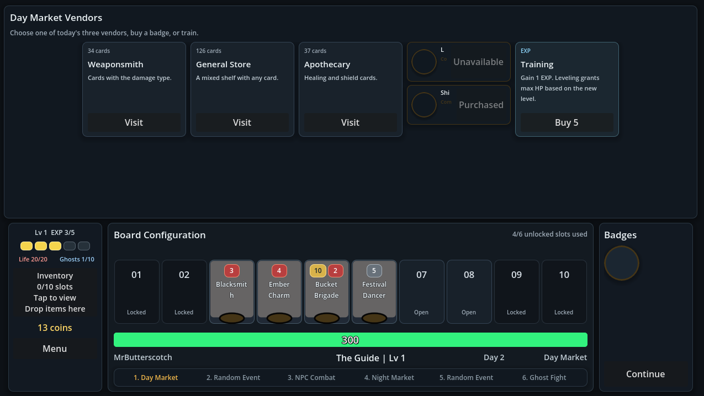

Auto Battler
Draft units, shape synergies, and watch each round resolve.

Butterscotch Studios presents
A fantasy auto battler from Butterscotch Studios, currently in alpha.
Game studio
Our current and only game is Craven. We are focused on building one sharp, strategic auto battler and improving it through alpha.
Now in alpha
Draft units, shape synergies, and watch each round resolve.
A tactical arena built around unique cards and hard choices.
Craven is still early. Systems, balance, and presentation may change.